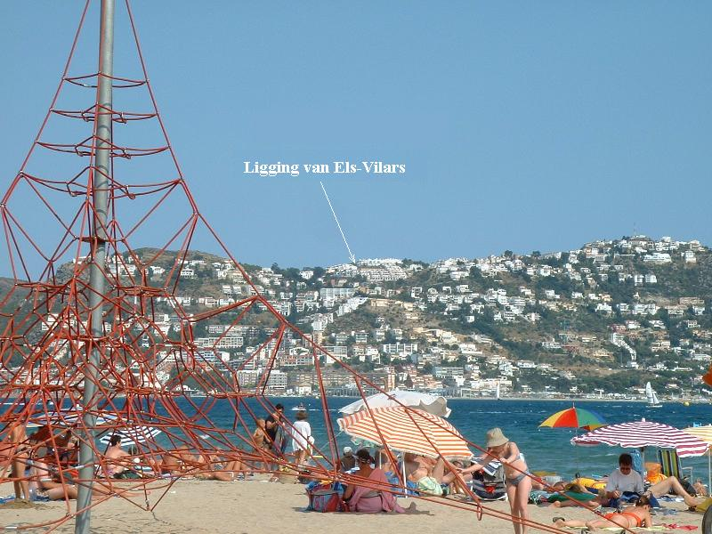
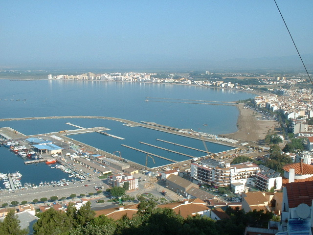
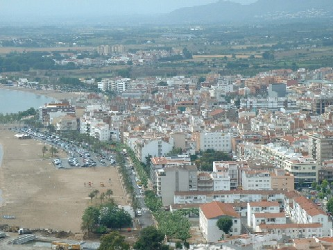

De wegen vanuit Rosas leiden u door overweldigende berglandschappen en langs pittoreske dorpjes. Met recht mag dit ''het andere Spanje'' genoemd worden. Op ca. 72 km van Rosas ligt de stad en tevens vliegveld Girona. Girona of Gerona zoals de Catalaanse gemeenschap in Catalonië hun stad noemen, heeft een mooie oude binnenstad, div. monumentale gebouwen, een kathedraal en de rivier Ter die er doorheen stroomt. Andere stadjes zoals Cadaqués ca. 20 km (geboorteplaats van Salvador Dali en Picasso) en Pals zijn zeer zeker een bezoek waard. Het natuurpark van de moerasgebieden van d' Empordá zijn voor de natuurliefhebbers een must. Voor de paard liefhebber Spaanse paarde-dressuur Hipica Aiguamolls in Palau-Savardera. Aan de Costa kunt u tevens een helicopter vlucht maken of deltavliegen als u eens op een andere manier de grillige klifkust wilt bezichtigen of de vele zandstranden wilt natellen (19 in totaal).
Een hoogtepunt is natuurlijk de geweldige en sfeervolle stad Barcelona ca. 166 km met het onvoltooide levenswerk van Gaudi de Sagrada Familia. Zeker doen: slenteren over de beroemde promenade in de binnenstad, de Ramblas. Zeker beleven: de unieke sfeer in Parc Guell, waar bouwkunst en natuur perfect gecombineerd zijn. En zeker bezoeken: de musea van Joan Miro, Picasso en Gaudi. Barcelona kunt u drie maal per dag vanuit Rosas bereiken met de bus, overigens ook prima te bereiken met de kusttrein vanuit Figueras, een leuk tochtje op zich. Figueras ca. 18 km, was de thuisbasis van Salvador Dali een bezoek aan het ''Dali'' museum moet u zeker niet vergeten.
In Rosas zelf is natuurlijk ook veel te doen o.a. Aqua Brava-Parc Aquatic (zwemparadijs met enorme glijbanen), rollerskatebaan, pretpark, minigolf 18 holes, tennis, water ski/snorkelen/duiken/varen/boot/jet ski huren etc., tevens vele bodega's (wijnproeven) zeker niet overslaan én genoeg winkels om lekker te slenteren na een dagje aan et strand. Of genieten van het nachtleven in de diverse nachtclubs (o.a. dicoteca Chic, Picasso, Caribeno, piano Bar Caribe).
Een grote toeristische markt op elke zondagochtend en in de haven van Rosas is er dagelijks een visveiling.
Carnaval is één van de jaarlijks terugkerende feesten in de maand februari en augustus.
  